UNIT 3: SOUND. TECHNICAL EQUIPMENTS
3.1. Definition of sound. Determination of the physical and physiological qualities of sound
Sound is a longitudinal mechanical wave produced by a vibrating object that is propagated through elastic means, usually air. Sound can be understood as a dual nature phenomenon:
1. Physical: it consists of the mechanical vibration that is caused by the displacement of air molecules caused by an external sound pressure and that is capable of generating an auditory sensation.
2. Physiological: it is the auditory sensation that is generated by the ear in the brain and is caused by a physical cause (mechanical vibration that propagates through an elastic medium).
Sound: vibration that occurs with a certain frequency above the atmospheric pressure of the air and that can be captured by the human ear. Therefore, as it is a mechanical vibration, it needs a medium to propagate itself.
The branch of physics that deals with the study of sound as a physical phenomenon is acoustics.
3.1.1. Sound waves as a physical phenomenon
First of all, it must be understood that waves are vibrations that involve the movement of molecules, which transmit energy from one place to another. Depending on how the movements of the particles are related with respect to the direction of propagation, two types can be distinguished:
1. Transverse wave: it occurs when the particles in the medium vibrate perpendicular to the direction of propagation of the waves. The waves generated by the movement of a string serve as an example. 2. Longitudinal wave: takes place when the particles of the medium vibrate parallel to the direction of propagation of the wave; or example, a sound wave.
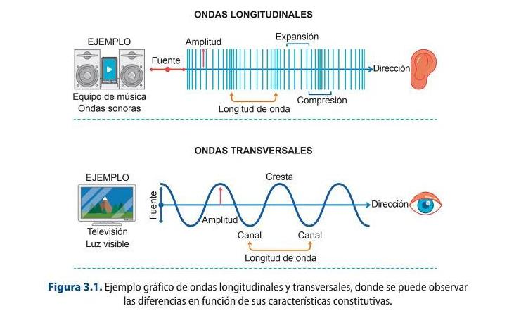
Sound Waves
The speed of propagation will depend on the mass or density, the temperature and the elasticity of the medium. It is important to note that the speed of sound propagation is constant in each medium.
For example, in the air environment, at a temperature of 0ºC, the speed is 331.4 m / s, but the standard value that is usually used for calculations is 340 m / s. In this way, increasing these variables, the speed of sound is increased.
The formula to calculate the speed of sound propagation in the air environment is: v = 340 + 0.6 · t
where v is the speed of sound expressed in m / s and t is the temperature of the medium expressed in degrees Celsius (ºC).
7.1 Sound calculations
Calculate the speed of sound propagation in air with a temperature of 20ºC
3.1.2. Characteristics
Sound, being a wave, has all the characteristics of wave motion, that is, frequency, period, amplitude and wavelength.
The frequency (f) is the number of cycles or complete vibrations performed in one second. It is measured in hertz (Hz) and it is important to know that 1 Hz = 1 cycle / second. And period is the time required for a complete oscillation and is expressed by the letter T. Its unit is the second. Therefore, the frequency is the inverse of the period, which is the time it takes to finish a wave.
The frequency is expressed as:
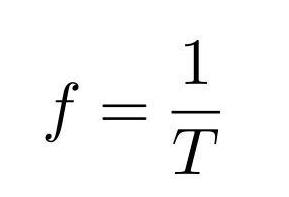
Amplitude and wavelength are two of the characteristics of the wave. Wave amplitude is understood to be the maximum value that the disturbance reaches at the elastic medium, that is, it indicates the level or power at which an oscillation has occurred.
Wavelength is understood as the distance between two consecutive peaks of a wave so it calculates the space that a complete wave occupies. It is measured in units of distance, is generally expressed in meters, and is represented by the Greek letter λ.
To calculate the wavelength use the following equation:
λ = v ∙ T
V is the speed of sound and T is the period, so like that we know the time required to repeat a complete oscillation. Note that T (period) is the inverse of f, so it can also be said that the wavelength is:
λ = v ∙ T =
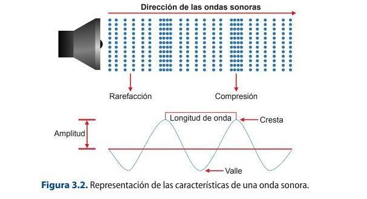
An example of this is produced by putting the ear on the track of a train to hear when it is coming, since the speed of sound propagation in steel is much higher than in air.
The speed of sound propagation (c) is the speed at a sound wave propagates in diferent mediums. It is measured in meters per second (m / s). It is important to know that the speed of sound is different in each medium and that it varies depending on the variations of climatic factors. In this way, for each degree Celsius that the temperature increases, the speed of sound propagation in the air increases by 0.6 m / s, so, higher the air temperature is higher it will be its speed of propagation. The reference value for the speed of sound propagation is 340 m / s in air.
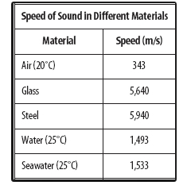
The following equation is used to calculate the speed of sound in different mediums: 𝑓= 1
If
If we replace the frequency in the first equation, the speed of sound can also be calculated by:
3.2 Working with speakers
A sound wave, which has a wavelength of 0.6 m, travels through water at a speed of
1450 m /s. Find out what its wave frequency is.
3.3 Working with speakers
Determinate the period of a speaker that vibrates with a frequency of 20,000 Hz.
Sound: Wavelength, Frequency and Amplitude
3.1.3. Sound as a physiological phenomenon
The human ear is capable of perceiving waves of different frequencies, always depending on individual factors, ranging from 20 Hz to 20,000 Hz. This is known as the audible spectrum. This mechanism decodes the sound waves into nerve information that will be processed by the brain. Before establishing the functioning of the auditory system, it is necessary to see its physical composition.
The parts of the ear are:
1. External ear: it is the outermost part of this anatomical structure. It is formed by the auricle or ear, which collects and channels sound waves into the auditory canal, through which they travel until they reach their end, which is the eardrum or tympanic membrane.
2. Middle ear: it is the part that begins with the eardrum and ends in the oval window, and serves as a transmitter of sound waves from the outside to the inside of the ear. It is made up of three
small bones, which are the hammer, anvil, and stapes, which serve as a bridge to the oval window (a membrane that lines the cochlea in the inner ear). In this part is also the Eustachian tube, which connects the ear with the palate and whose function is to equalize the atmospheric pressure between the outside and inside of the ear.
3. Inner ear: it is made up of a series of ducts in which the cochlea is located, the vestibule, which is made up of a series of fluid-filled ducts that are the responsible for maintaining balance and the auditory nerve. The auditory nerve is responsible for conducting electrical signals to the brain to be processed.
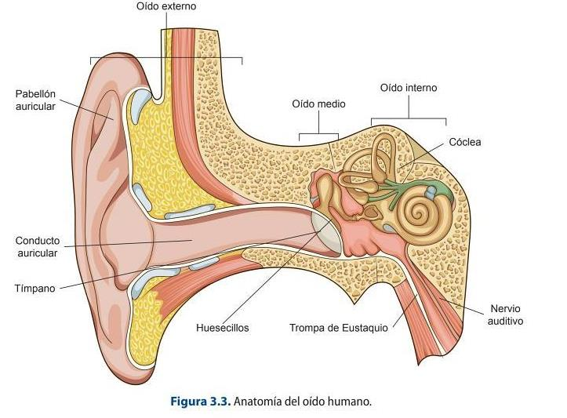
Journey of Sound to the Brain
The sound waves reach the outer ear where, as already mentioned, they are conducted towards the ear canal, which is responsible for directing the waves until the eardrum vibrates. These disturbances are transmitted by the bones of the middle ear to the inner ear, which will produce oscillations in the fluid that contains the cochlea and which, through the hairy fibers, will be converted into electrical impulses to be conducted by the auditory nerve to the brain.
The sensitivity of the ear to different frequencies for the entire audible spectrum is not uniform, largely due to resonances from the outer ear. The cause is what is known as the principle of sound equality, so that, depending on the volume, the high and low frequencies are not perceived as well
as the medium ones. The representation of the differences in sensitivity is carried out by means of a set of curves that are called isophonic and that indicate the sound pressure level (SPL) necessary for a sound to be perceived at a certain sound level.
The sound level is measured in phones, the zero phone curve being the one that passes through 0 dB for a 1 kHz. The ear has a dynamic range of 0 to 140 phones, the latter known as the pain threshold. The phone is a physically variable unit, but subjectively constant, so that in the isophonic curves (Figure 3.4) it can be observed how the number of phones remains constant along any of them.
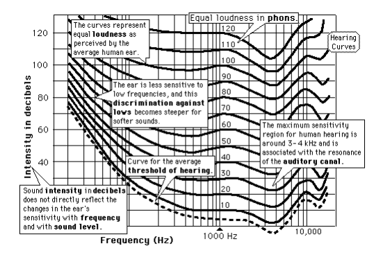
Hearing threshold (umbral de audición): minimum sound pressure that is capable
of producing an auditory sensation. 0 dB is taken as a reference.
Pain threshold (umbral del dolor): acoustic pressure at which the ear begins to
experience a painful sensation.
The direction in which a sound source is produced depends on the interpretation maked by our
brain depending on the difference in phase, time, amplitude or the spectral content captured by
our ears.
The stereo position, which is the most common option when placing the speakers, establishes an
equilateral triangle of three meters on each side between the monitoring system and the listener.
In order to produce this effect, the incorporation of delays between both monitors are used.
3.1.4 Sound qualities
The ear is able to distinguish sounds based on three characteristics or qualities present in them and that are related to their physical properties: pitch, timbre and loudness.
PITCH (Depends on the FRECUENCY)
Pitch (tono) is understood as the quality of the sound that allows distinguishing between the frequencies of the audio spectrum. It depends on the speed of the vibration or the speed of a sound wave, which is usually always constant in a controlled environment, that is, it is not modified by environmental factors such as temperature and humidity.
NOTE
HIGHER FRECUENCY - > SHORTER WAVELENGTH = HIGHER THE PITCH LOWER FRECUENCY- > LONGER WAVELENGTH = LOWER THE PITCH
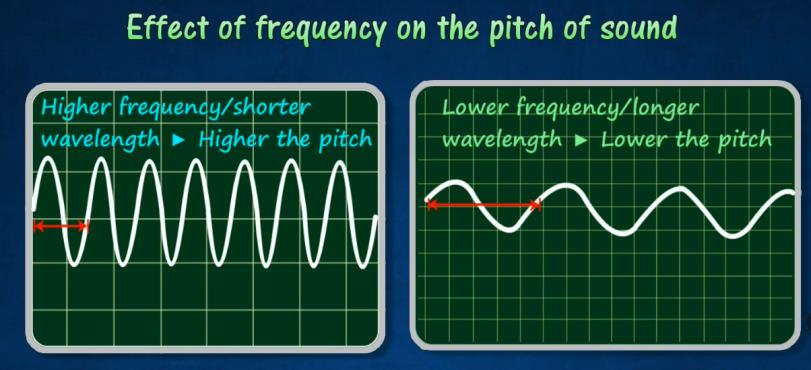
The range of frequencies that humans can perceive is between 20 Hz and 20,000 Hz. This band that corresponds to the sound spectrum is divided into a series of patterns that correspond to the octaves and thirds of an octave, a normalized logarithmic division. The audible spectrum can be divided based on pitch into:
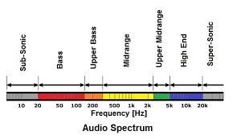
TIMBRE (QUALITY)
Timbre is the subjective quality of sound, and is determined by the presence and number of harmonics, i.e. it is the characteristic that allows us to identify different musical instruments of the same pitch and loudness emitted by different sound sources. Therefore, timbre makes it possible to distinguish the same note produced by a piano or by a trumpet, i.e. the fundamental pitch is the same, but the harmonic content of the signal varies.
NOTE
A note is a blend of the fundamental of the lowest frequency overtones of higher frequency. Quality of a note is determined by the harmonics (overtones). Overtones can be identified from the waveforms produced from different instruments.
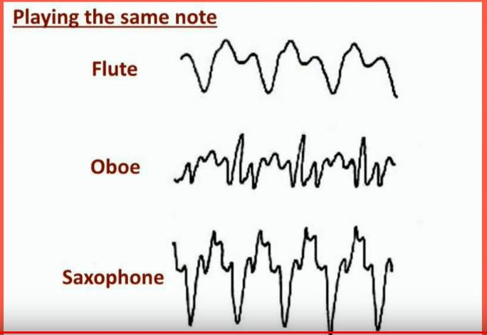
LOUDNESS (INTENSITY)
Loudness is another property or characteristic of sound that can be understood according to two different criteria. From a subjective, more physiological point of view, intensity is understood as the sensation that a wave causes in the spectator and which gives the property of being able to differentiate between loud and soft sounds. From a more objective point of view, the concept of intensity refers to the energy that passes through a certain surface in a specific time. Intensity is measured in decibels (dB).
NOTE
GREATER the AMPLITUD - > LOUDER THE SOUND = MORE ENERGY SMALLER the AMPLITUD- > SOFTER THE SOUND = LESS ENERGY
EXAMPLE: Guitar is strummed harder to INCREASE the ENERGY and AMPLITUD of vibration, thus producing a LOUDER SOUND.
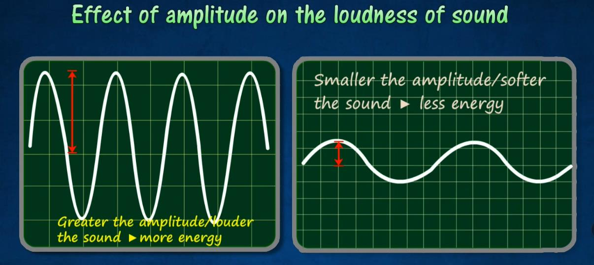
3.1.5. Physical phenomena produced by sound waves
It is very important to know how sound waves behave in their transmission through space and how they behave in relation to the elements in their path, as this can condition the design of acoustic areas. The most common phenomena are: reflection, refraction, diffraction and others such as echo, reverberation, interference, absorption or resonance.
In acoustics, reflection causes echoes and reverberations.
Refraction of the sound
The refraction of sound is a change in direction as the wave moves from one medium to another. It bends or looks bent as they move through from air to another medium.
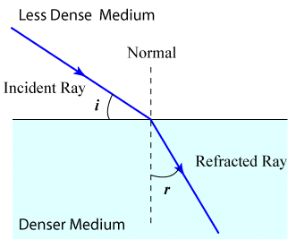
Reflection of the sound
Reflection is the change in direction of a wavefront at an interface between two different media so that the wavefront returns into the medium from which it originated. Common examples include the reflection of light, sound and water waves. The law of reflection says that for specular reflection, the angle at which the wave is incident on the surface equals the angle at which is reflected. Mirrors exhibit specular reflection.
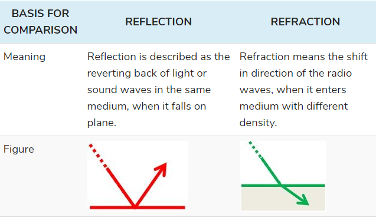
Reverberation
If this distance is short, such as in a room or theater, the sound will be reflected back to the source in less than one-tenth of a second. This effect is reverberation. Because there is such a small delay in the sound repetition, sometimes only a few milliseconds, reverberation is often perceived by a listener as adding fullness to the original sound.
Reverberation will often be added to recorded music to better simulate the sound of a live performance, or to enhance the tone by making a thin sound fuller.
Echo
Everyone has had the experience of calling out in a valley or between large buildings and hearing our voices repeated back to us. When reflected sound travels a greater distance, such as a river valley, and takes more than one-tenth second to return, it is referred to as an echo.
Echo does not add to the original sound as reverberation does, but is perceived as a distinct repetition of the sound, usually slightly fainter than the original. The sound is weaker because of the energy lost as the sound waves travel the greater distance. This is referred to as decay. Echo can be measured by the time lapse between repetitions, strength of the repetitions (i.e., how loud the repetition is) and the decay of the sound.
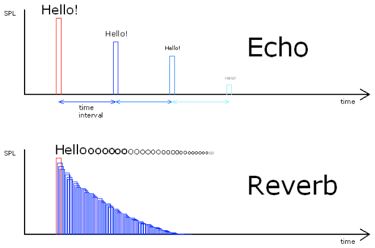
Difraction of the sound
The phenomenon in SOUND PROPAGATION whereby a SOUND WAVE moves around an object whose dimensions are smaller or equal to the WAVELENGTH of the sound.
High frequency sounds, with short wavelengths, do not diffract around most obstacles, but are absorbed or reflected instead, creating a SOUND SHADOW behind the object. Such is the case with high frequencies with respect to the head, and thus is important in BINAURAL HEARING. Low frequency sounds have wavelengths that are much longer than most objects and barriers, and therefore such waves pass around them undisturbed.
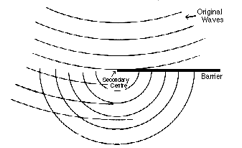
When the wavelength is similar to the dimensions of the object, as with low frequencies and buildings, or mid-range frequencies and the head, the wave diffracts around the object, using its edges as a focal point from which to generate a new wavefront of the same frequency but reduced intensity. Thus, diffraction may aid sound dispersion and DIFFUSION.
Interferences of the sound
Two traveling waves which exist in the same medium will interfere with each other. If their amplitudes add, the interference is said to be constructive interference, and destructive interference if they are "out of phase" and subtract. Patterns of destructive and constructive interference may lead to "dead spots" and "live spots" in auditorium acoustics.
Interference of incident and reflected waves is essential to the production of resonant standing waves.
Interference has far reaching consequences in sound because of the production of "beats" between two frequencies which interfere with each other.
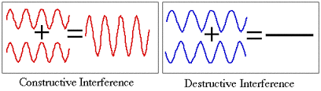
Sometimes, for instance, when we place one mic in from of another mic, we can interfere between both captures and have problems to pick up the sound source properly.
3.2 Microphones: Definition and characteristics
A microphone is an acoustic transducer that allows the conversion of the sound signal into electrical impulses. Therefore, it needs two types of transducers that make it possible to convert one type of energy into another. These are:
1. Acoustic-mechanical transducer: it consists of a diaphragm, which is a sheet that is responsible for detecting the pressure changes produced in it due to sound vibrations. This element contains the different acoustic circuits that will allow the directivity characteristic of the microphones to be established.
2. Mechanical-electrical transducer: this is an electro-acoustic device that converts the displacement of the diaphragm into an electrical signal.
A Quick Guide to Microphones
Digital wireless microphones and the RF spectrum squeeze
Analogue UHF radio mics have been squeezed by the ‘digital dividend’: the 700 MHz and 600 MHz bands were reallocated to mobile networks, so those old frequencies are now off-limits. Current systems are digital wireless (Sennheiser EW-DX, Shure Axient Digital, Wisycom), offering encryption, more channels per MHz and cleaner audio than analogue companding.
Sources: Wireless microphone (Wikipedia) · Digital dividend after DSO (Wikipedia)
3.2.1. Microphone characteristics
Microphones have a number of properties that determine their use and the quality of the sound they will pick up. There are some distinguishing features of the different brands that can be found on the market. The main distinguishing features are sensitivity, fidelity, directivity or directionality, impedance, signal-to-noise ratio, dynamic range and distortion, which are detailed below.
SENSITIVITY
Sensitivity is the property that the microphone has to establish the efficiency with which this element is able to transform sound pressure into electrical impulses, i.e. the ratio between the voltage it provides at the output when the input has a certain sound pressure value.
where:
- V is the electrical voltage measured in volts (V).
- P is the sound pressure which is measured in hertz (Hz). So s is expressed in millivolts per pascal (mv/Pa).
The sensitivity of a microphone is the ability of the device to pick up sound, thus, the level of sensitivity (S t), which expresses the ratio between the sensitivity and the reference sensitivity level (1 V/Pa), the correspondence of which is expressed in the following formulation: 𝑆𝑡= 20𝑙𝑜𝑔 ( 𝑆
Sensitivity is expressed in V/PA.
FIDELITY
Fidelity is expressed in dB, and is the variation of sensitivity with respect to frequency, and therefore depends on three indicators:
1. Frequency response or sensitivity level within the audible spectrum (from 20 Hz to 20 000 Hz) establishes the frequency response curves that allow us to know if there are deviations or not.
2. Regulation: implies that the frequency response should be free of peaks and troughs, i.e. uniform with respect to the audible spectrum.
3. Linearity: it establishes that the output voltage provided by a microphone is proportional to the incident input pressure. Thus, for example, if a microphone is used to pick up a speech, the aim is for it to have a frequency response limited to the human voice, as this will avoid picking up frequencies above and below it and therefore avoid introducing noise.
DIRECTIVITY
Directivity indicates the variation in sensitivity of a microphone depending on the direction from which the sound is emitted and is represented in polar diagrams, i.e. they show the graphical representation of the directionality of a microphone with respect to different frequencies. Depending on these characteristics, microphones can be:
1. Omnidirectional: these are microphones that show the same sensitivity with respect to the incident wave from any location and, therefore, pick up the acoustic signal in all directions. Their polar diagram is a circle.
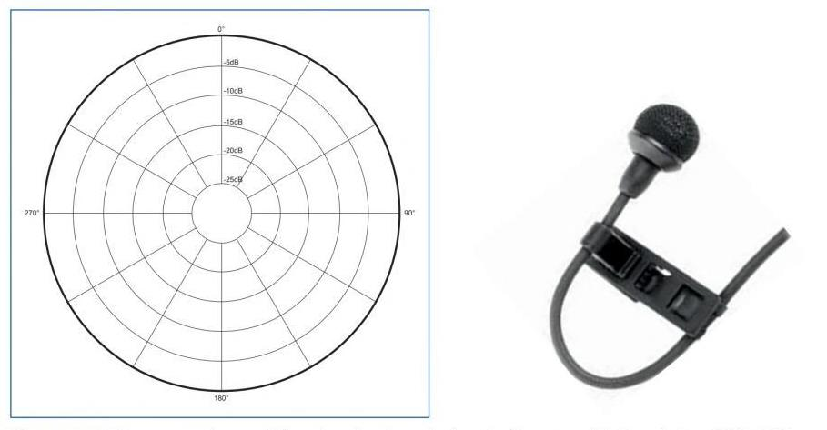
2. Bidirectional: they are receptive to sounds coming from the front, both anteriorly and posteriorly, to the diaphragm, leaving sounds coming from the sides undetected. Their polar diagram is similar to a figure of eight.
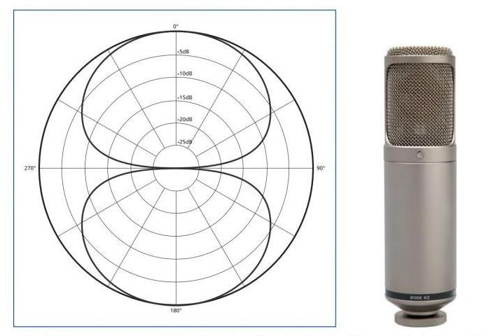
3. Cardioid or unidirectional: these are those that are capable of receiving frontal sounds, progressively diminishing as these sounds move away from this direction. Their polar diagram is similar to the shape of a heart.
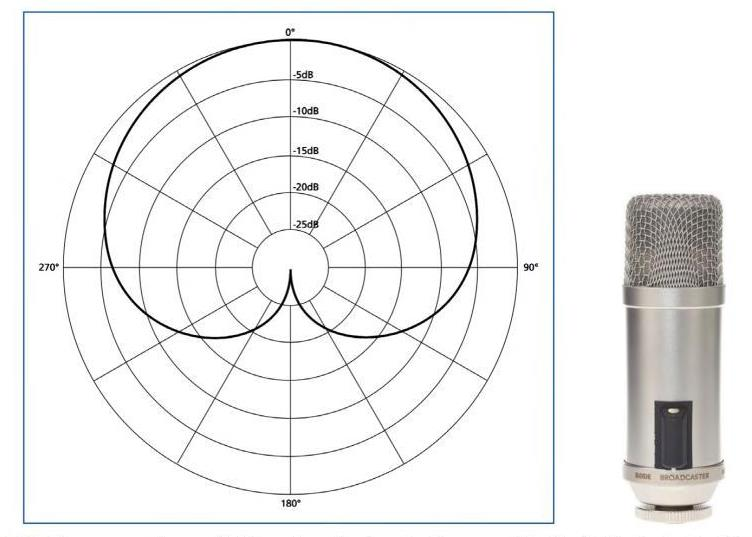
4. Hypercardioid: receptive sounds from the front and also sensitive to sounds from the rear, i.e. a combination of two cardioids of different sensitivities. Their polar diagram is a heart with a small rear lobe.
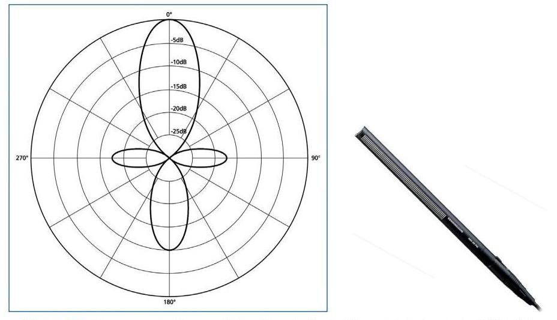
5. Superdirectional: these are those capable of registering certain sounds while eliminating all others. Their polar diagram is clover-shaped.
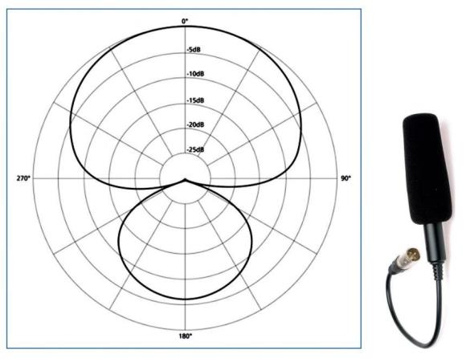
Impedance
Impedance is the characteristic of an element to resist the passage of alternating current. The impedance of microphones is measured in ohms (Ω) for a standard frequency of 1 KHz. The output impedance of the microphone should be a maximum of one third of that of the device to which it is connected to avoid signal dropout and increased noise. Therefore, in order to achieve maximum power transfer between the two devices, both impedances should ideally be the same.
Therefore, depending on this property, which depends on the technique used in their manufacture, two main types can be established:
1. High impedance microphones: those with an impedance of over 1000 Ω and an output voltage of between 10 mV and 30 mV.
2. Low impedance microphones: those with an impedance of less than 600 Ω and an output voltage of between 0.3 mV and 2 mV.
Signal-to-noise ratio
Signal-to-noise ratio Microphones, being an electronic device, are not exempt from producing noise. The voltage level provided by the microphone when there is no incident pressure value on it is known as noise and is measured in dB. On the one hand, it produces noise due to the movement of the electrons that make up the microphone. In addition to this type of noise, there are other types of noise. One of them is the noise produced by air particles colliding on its membrane. Another would be caused by external issues such as a bad connection.
The relationship between the existence of all these types of noise with respect to the useful signal provided by this device is known as the signal-to-noise ratio. A sound pressure of 1 Pa that can produce values around 60 dB is taken as a reference for a signal-to-noise ratio.
Dynamic range
The dynamic range is the margin in dB between the loudest and the weakest level of a sound carried by an electrical signal produced by a microphone.
Distortion
The set of signals that arise at the output of a system that were not present at the input, thus modifying the useful signal. In microphones, it is captured by the parameter TDH or total harmonic distortion.
3.2.2. Types of microphones according to their construction
The quality of the sound picked up by a microphone is achieved through the capsule. Depending on their construction, the following types of microphones can be distinguished: variable resistance, piezoelectric, electromagnetic and electrostatic, which are explained below.
Variable resistance microphones
These are the most archaic microphones and base their operation on pressure differences that modify a resistance by producing an electrical charge. The main type is the carbon microphone.
Carbon microphones consist of a metal foil that is attached to a carbon electrode, which is located in an enclosed chamber with carbon particles, which vibrate when a wave hits its surface, producing a voltage that is proportional to the displacement of its membrane. As its resistance varies, it does not produce an output voltage, so a battery must be used to convert them into electrical signals.
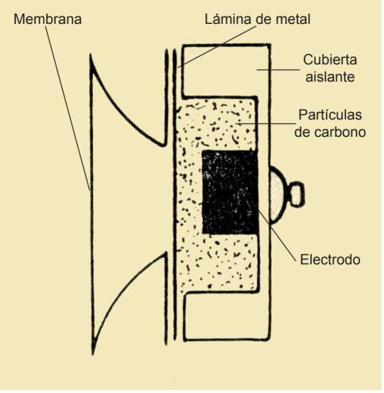
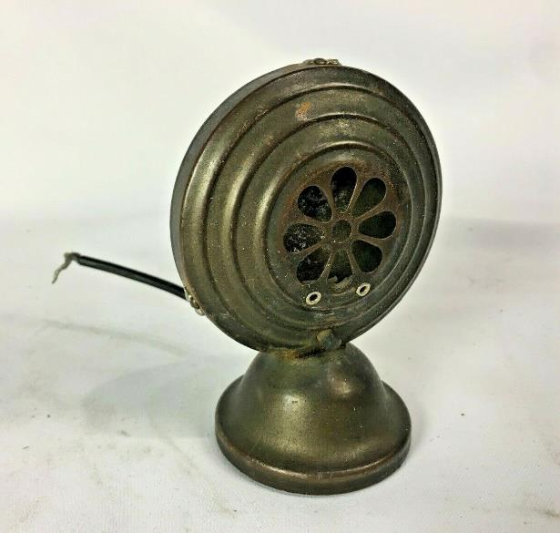
The characteristics of this type of microphones are as follows:
High noise level. Limited and irregular frequency response, between 250-3500 Hz. It produces considerable distortion. It has a sensitivity of around -30 dB. It has an output impedance of 30 Ω or 50 Ω. They are omnidirectional type.
Piezoelectric microphones
This type of microphone consists of a piezoelectric element that generates an electrical charge when any variation in sound pressure occurs. There are two basic types:
1. Crystal microphones: made up of crystals (quartz salt, phosphate crystal, etc.) which, when excited by a sound wave, bend, generating a driving force proportional to the variation experienced. Their characteristics are: High sensitivity (-40 dB). They do not need external power supply. They are very fragile and can be affected by changes in temperature and humidity. It has a response curve from 80 Hz to 10 KHz. They are omnidirectional microphones. High output impedance.
2. Ceramic microphones: they work in a very similar way to the previous ones, except that their piezoelectric element is made of ceramic, such as barium and titanium. Their characteristics are: They are not affected by changes in temperature or humidity. Their sensitivity is lower than glass microphones. They are mainly used in public address systems. Low cost.
Electromagnetic microphones
This type of microphone consists of transducers in which an electrical conductor is displaced, due to the pressure exerted by a sound wave, in the field created by a magnet.
1. Dynamic or moving coil microphones: these consist of a coil-like transducer which is attached to a plastic diaphragm suspended in a magnetic field of a magnet. The vibrations of the diaphragm cause the coil to move so that an electric current is produced. Their characteristics are: They are omnidirectional microphones, although directional microphones with a good response are now available. They have a frequency response of a resonance peak of several decibels, around 5 KHz, i.e. limited and somewhat irregular. They have a fairly rapid drop in response above 8-10 KHz. They are very robust with excellent dynamics. Low internal impedance (between 200 Ω and 600 Ω). They are very sensitive (between -66 dB and -52 dB). They are hardly affected by changes in temperature and humidity. They do not require an external power supply.
Some examples used at the professional level are:
Shure SM 57 (very common in live and studio applications due to its cardioid characteristics and a frequency range from 50 Hz to 15 KHz);
Shure Sm 58 (model used for voice pick-up, especially in live applications; it has a frequency range from 50 Hz to 15 KHz);
AKG D222 (it is a microphone that allows recording high and low frequencies through its two capsules; its frequency range is from 20 Hz to 18 KHz).
2. Ribbon microphones: they replace the diaphragm of the moving coil by a metal ribbon, crumpled and suspended in the magnetic field, which vibrates and induces a voltage. Their characteristics are:
They are expensive to produce. They are very sensitive to wind shocks which can break their membrane. They have a very analogue frequency response.
Electrostatic microphones
These microphones consist of two plates, one which is fixed and the other which is mobile and operates as a diaphragm. When the wave hits the plate that works as a diaphragm, it vibrates and modifies the existing separation between both plates, varying its capacity due to the variable voltage that appears.
1. Condenser or high-capacity microphones: when the waves hit the diaphragm, it vibrates and modifies the separation between the two plates that compose it. A polarization or phantom voltage is applied to the fixed plate through a resistor, which must be continuous and standardized in order to charge the condenser. Its characteristics are:
Low output impedance. Very good frequency response. It is very sensitive (around 20 mV/Pa). They have different types of polar diagrams. They must use phantom power, which is a continuous power supply, to work perfectly. They are affected by weather changes.
One professional model in this category is Sennheiser MKH 40 (the different models have different directivity, high sensitivity and are very versatile).
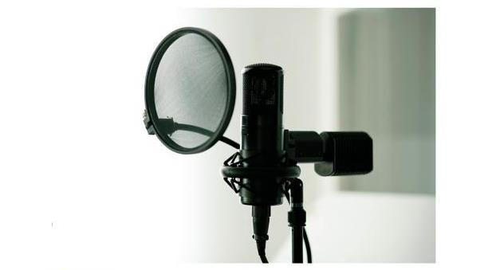
3. Electret microphones: These are very similar in operation to condenser microphones, but with lower performance. They differ in the material, which is electret, a material that is electrically pre-polarised and is characterised by its capacity to conserve charge without the need for a polarisation source, and therefore does not require external batteries to supply power.
3.2.3. Necessary accessories: mounts, anti-vibration mounts, shutters, anti-pop, clamps, guns, hangers
There are a multitude of accessories to facilitate the control, handling and placement of microphones. As for the supports on which it is possible to work with this type of device, it is possible to find mainly the following:
Giraffe Stand: this is a mechanism that allows the microphone to be directed at a relative distance from the subject. It consists of an adjustable telescopic system that allows the microphone to be oriented according to the conditions of each scene in order to achieve the best recording. Desk stand: a stand that facilitates the positioning of the microphone on flat surfaces such as tables. Widely used in press conferences. Boom stand: The boom stands are almost the same as the standard ones, but they come with an attached arm. With the attached boom arms, you can position the mics farther from the stand’s vertical part. Moreover, you can adjust the boom arm at various angles to set the mic correctly. The boom stands afford better flexibility and adjustability. Other fastening systems: depending on their use, such as field feet.
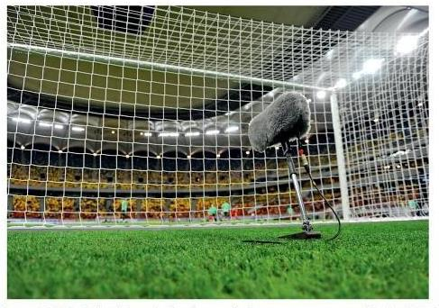
Other types of elements that are used as accessories to the collection mechanisms are:
Windshields: their main function is to reduce the turbulences produced by the air and to avoid, as far as possible, that the air reaches the diaphragm. This type of device is spherical in shape and made of plastic or polyester foam, and can be applied to all types of microphones. Anti-vibration clamp: this is a mechanism that has a mechanical damping system that absorbs the vibrations caused by the movements that occur.
7.5 Types of Microphones
Find the main microphone manufacturers and draw up a comparative table with the different types of
3.2.4. Microphone powering systems
microphones (minimum 5 types of microphones). Explain in what situation (or place) would you use that type of microphone.
Depending on the type of power supply, microphones can be powered by batteries or by the wires attached to the cable. In the latter case, there are two types of power supply:
1. Phantom power: there are microphones, as we have seen in Section 3.2.2, such as condenser or electrostatic microphones, which need to be powered continuously in order to work. The phantom power supply is a system that allows this type of microphone to power its fixed plate and polarise its diaphragm at the same time that the preamplifier included in the housing is powered. This type of power supply provides between 9 V and 48 V to the device in order to be able to operate according to the specific situation.
2. AB power supply: In this case the positive and negative voltages are applied to the modulation wires in a condenser microphone.
3.3. Audio lines: balanced or unbalanced cables, hoses, phantom power
Audio lines serve both to receive and to send a signal, i.e. they have a two-way function depending on the type of connector at their ends. Audio wiring can be either analogue, transmitting information through electrical pulses, or digital, transmitting information encoded in binary numbers. Therefore, the electrical circuit composed of a series of cables intended to carry sound signals from the microphones to the various devices used to process the signal is a microphone line. The cables are made up of four distinct parts:
1. External protector: made up of a material that protects the conductors and the shield from the different external variations such as friction, temperature changes, etc.
2. Mesh: a material that surrounds the conductors and is used to reduce electromagnetic interference.
3. Conductor insulator: material that covers the signal conductor and prevents them from short- circuiting by isolating the voltage between the conductors.
4. Conductor: responsible for electrical conduction. They can be configured in different ways such as: pair of parallel conductors, intertwined pair of conductors, shielded or coaxial conductor and coiled pair of conductors with shield.
With this in mind, unbalanced lines are the most commonly used in domestic or semi-professional installations. They consist of two wires: an audio signal conductor and a grounding conductor. This type of wiring is more prone to pick up interference or noise.
Microphone lines can be of two types: symmetrical or balanced and asymmetrical or unbalanced.
Unbalanced shielded lines are made up of a series of conductors surrounded by a mesh of copper wires that intertwine to form a network, allowing the internal wiring to be shielded to avoid any type of interference. They are used in the connection of non-professional, domestic and signal line equipment.
Balanced shielded cables or lines have two conductors and a shield that covers them. They are used in installations where it is necessary to minimise losses with a high level of protection. They are
used in the connection of microphones, MIDI signals and digital audio. When used with microphones that usually give low amplitude signals and have to be sent using many meters of cable to the desk, it is a priority to use this type of balanced cabling to avoid interference.
32-bit float recording and timecode sync
Field recorders (Sound Devices MixPre, Zoom F-series) now record in 32-bit float. The dynamic range is so wide that clipping and under-recording are effectively impossible — levels are set afterwards in post. Timecode generators (Tentacle Sync, UltraSync) keep multi-camera and separate sound recorders locked together.
3.3.1. RCA / CANON / JACK audio connectors
Audiovisual productions should be approached with an understanding based on specific needs. In this way, and in the case of audio specifically, the sound requirements of the event are studied and the devices to be used are structured. To make the union between the different audio devices, cables are used whose terminations will have a series of connectors specific to this area. The main connectors are RCA, XLR or Canon and Jack.
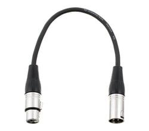
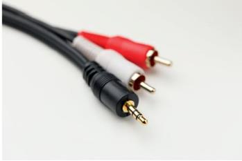
There are situations where the terminals used are not suitable for incorporation into another device, so adapters are necessary.
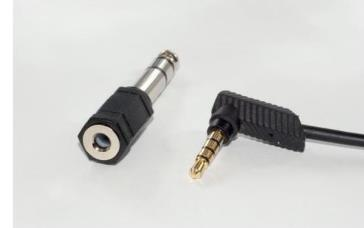
3.4. Technical and operational performance of analogue and digital audio mixer for live TV and stage performances
The audio mixer allows the mixing of different sound sources that are going to be part of an audiovisual program. There are analogue and digital mixers, but in both cases the built-in controls are the same, with the exception that, instead of being accessed via a switch, it is accessed via the menu and its options.
All signals must be physically connected to the inputs of the corresponding channels for further work. These can be of two types: line or mic. In turn, they can be balanced or unbalanced signals.
A line signal is defined as a source input that is not a mic input and therefore requires little amplification. On the other hand, a mic signal is defined as a signal from a microphone pick-up. In these cases, the table has a button to switch the phantom power supply (48 V), which is necessary for condenser microphones.
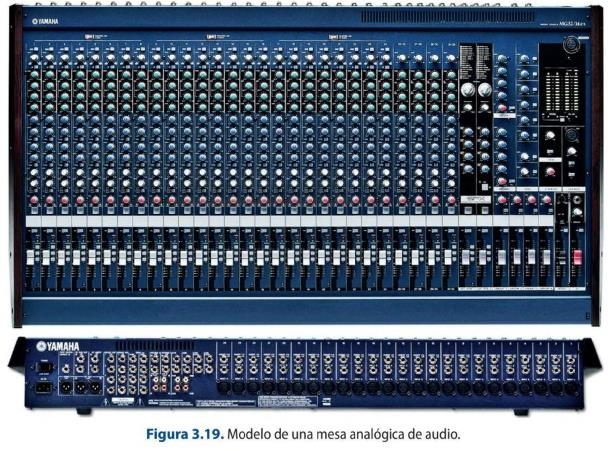
Phantom power switch: offers the possibility of supplying power or direct current to those audio devices that need it for their operation,
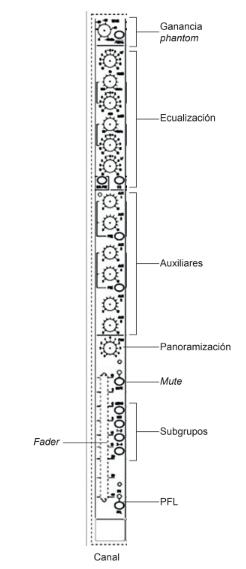
such as condenser microphones.
Gain: potentiometer to amplify the input signal and regulate its level.
Equalization section: allows to operate on a band of different frequencies, that is to say, it alters the structure of the timbre of a sound. It consists of a switch to make adjustments on the different potentiometers for high, medium and low frequencies.
Sending to auxiliary: allows a signal to be taken to another output of the console or to carry out unmixing depending on the needs that arise in the programme. They have their individual gain potentiometer to work on the volume. The number of auxiliaries depends on each console. They can be used, for example, to send the programme return signal to a journalist in the field. In this case, all the audio signals should be sent, except the journalist's signal, i.e. n-1.
Audio panning: this section allows the signal to be placed in a certain position in the stereo mix. The send can be adjusted within three positions
(right, left and centre). It is used to spatially position the signal to be listened to.
Channel fader: potentiometer that controls the output level of the channel. It also allows you to work with the sound planes within the final mix.
Subgroup switches: allow you to select the channels you want to couple into a single master to make your work easier.
Mute: used to mute the channel.
PFL (Pre Fader Listen): this switch allows you to listen to the signal of a channel without the need to raise the fader and, therefore, send the signal to broadcast.
On the other hand, the table has a series of general parameters that allow to regulate the master output and all the monitoring parameters. In this section it is worth noting:
Master fader: it regulates the final output of the program. It can be mono or stereo.
Fader: corresponding to the different subgroups. Once the channels that you want to work independently have been linked, the table consists of a series of faders that allow the work of all of them through a potentiometer.
VU meters and picometers: for the graphical representation of the signal level, i.e. the dynamic range of a sound signal.
Controls: controls for external monitoring of the signal and independent controls of the auxiliaries.
Audio monitoring: corresponds to the section intended for independent headphone monitoring.
The range of audible tones can be divided into six groups:
1. Very low frequencies: the range from 18 Hz to 60 Hz. It can be increased with an equalizer, but care must be taken because it can cause a masking effect. These are the frequencies that generate the sensation of power.
2. Low frequencies: this is the range between 60 Hz and 250 Hz. They are present in musical notes and their balance gives rise to a good musical balance.
3. Medium-low frequencies: this comprises the range between 250 Hz and 2000 Hz. It contains the lowest harmonics of most musical instruments and in the bass of the voice.
4. Medium-high frequencies: this comprises the range between 2000 Hz and 4000 Hz. These are the main constituents of the voice, therefore, we must try to equalize them without excess so that they do not cause problems in the understanding of certain phonemes.
5. High frequencies: this comprises the range between 4 KHz and 6 KHz. These frequencies are responsible for the cleanliness of the sound message.
6. Very high frequencies: they comprise the range between 6 KHz and 18 KHz. They allow us to work on the brightness and sharpness of the sound. When performing the equalization, the aim must be to improve the quality of the sound message and therefore to try to eliminate any distortion. For this purpose, it is important to use a spectrum analyser.
3.6 Sound Mixers
Performs a comparative analysis between analog and digital audio mixer models.
Digital audio mixers consist of the same parts and functions as analogue mixer, implementing the
same modules as digital options except for the input of the different sources to the desk, which
remains analogue. Technological evolution has facilitated the implementation of numerous new
features in the desks, and by digitalizing the sound signals it is possible to manipulate the
information in a more versatile and almost fully automated way. The use of such systems is
replacing the use of analogue desks for a number of reasons, including the absence of crosstalk.
However, they can present a distortion known as the clipping phenomenon. Another type of desks
are virtual desks, which consist of computer software that have the same applications as a physical
desk, but with fully digital potentiometers and functions.
In order to select the right sound desk for the realization of an event, it is important to know the
needs that derive from it, such as the number of channels to be used, how the sound signals will be
worked with, where the signals are to be sent or even their final use (live program, recorded,
broadcast use...). Depending on the type of use you want to give to a sound desk, it can be:
Professional radio mixer: this is the mixing device that is used in both radio and television.
Due to the requirements of these media, they are quite robust desks that have channels for
telephone lines, outdoor, duplex and have particular monitoring of the signal.
In-line or studio type mixer: it is a multitrack recording mixing device that consists of a series
of modules such as: input/output, master, monitoring and communication.
Split type mixer: a multitrack recording mixing device consisting of two modules, one
dedicated to the channel inputs and their control parameters, and another block dedicated
to working with the signal that arrives at the recorder in order to be able to modify it.
Portable mixer: these are smaller and more compact and allow the work of the different
sound sources on a smaller scale, as may occur in the recording of a report.
Microphone mixer: this device is basically used to work with microphones and their
modification. It has a very simple structure.
Specialised mixer: this is the device used in venues or by DJs. They have enabled line inputs,
and at least one microphone input to be able to make the final mix that will go to the master
output. They have a short travel fader and do not usually have an output to monitors, but
they are usually listened to through PFL via headphones.
Self-powered mixing desk: it has a built-in amplifier. It has a low cost and is used for events
that are not very complicated in terms of the number and type of sources.
Audio over IP (Dante, AES67) and immersive sound
Analogue multicore and MADI are giving way to audio-over-IP: Dante and the open AES67 standard carry hundreds of channels over ordinary Ethernet with sample-accurate sync. Delivery has also moved towards immersive formats — Dolby Atmos for cinema and streaming, and ambisonics for 360°/VR.
Sources: Dante (networking) (Wikipedia) · AES67 (Wikipedia)
DAT, MiniDisc and the old UHF bands
DAT and MiniDisc as recording media, and analogue radio mics operating in the vacated 700/800 MHz bands, are obsolete — transmitting in those frequencies is now illegal in most countries.